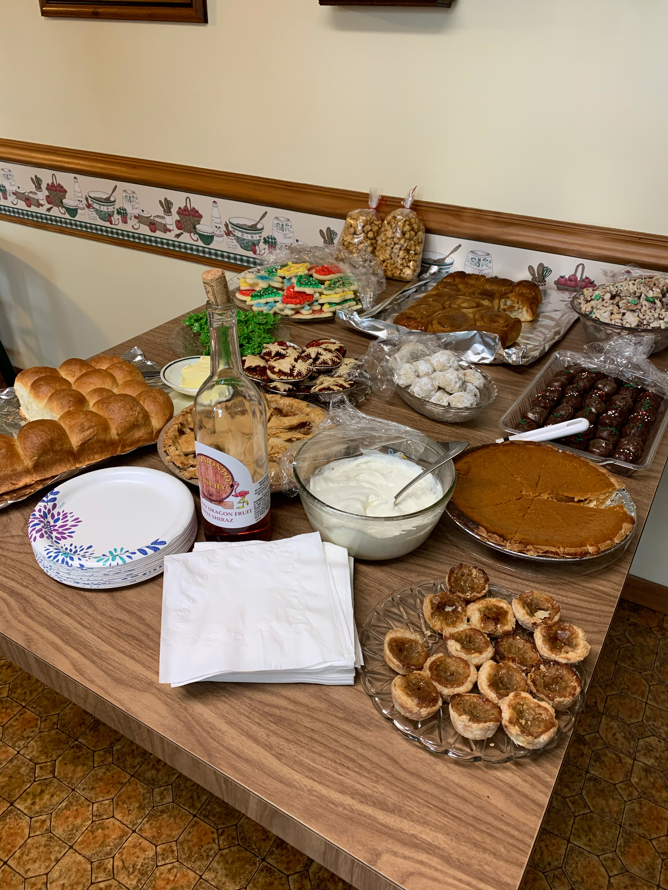

Recipe Stories
Many recipes are a form of oral history, passed down through years of mealtimes until finally scribbled on paper. My family's recipe cards tell stories of holifays, creativity, independance and, of course, delicious meals. These are only a glimpse into the history weaved into every card and crumb.